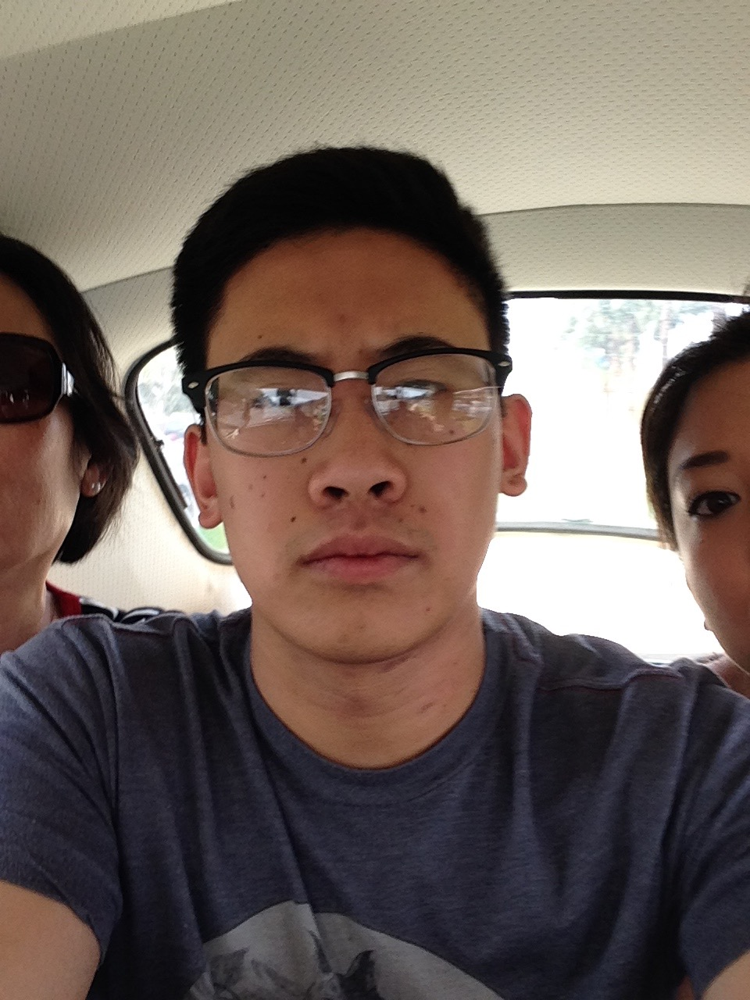

About Me
I was (born July 21, 1993), and live in Santa Ana. I am Cambodian and Chinese. I grew up going to schools outside my community due to better education opportunities and was often taken care of by grandparents putting me in many different and interesting environments. From this, I was fortunate enough to make friends of many kinds, and always look forward to making more. (even if I am a bit introverted) I also have a large family and support group.
I studied Biology in college and went to UCR. I first applied in engineering for a year, until I was having trouble and lost passion in the major. After the switch to biology, I felt much more comfortable and natural. Studying programming/computers briefly occured, scattered through my life from editing HTML on Tumblr to polish my blog page to some light work involving engineering and personal dabblings. I now hope to find a fresh start at UCI and maybe even incorperating other skills such as my science background.
I tend to jump around and alternate from a number of different hobbies. I like cooking, Netflix, and hiking. I am a big fan of eating + cooking shows, which made a natural transition towards me cooking and finding the fun in making/perfecting new meals. Being active is a big part of my life as I often go on walks and go to the gym. I also used to be in basketball and martial arts leagues emphasizing early activity as a foundation for my activity today. I've studied/am studying science and computers. I like reading online forums, T.V. show lore, and articles on technological breakthroughs, physics and biology. I like video games, yet mostly nintendo games as it is a big part of my childhood. Sleep is also fun. I have a dog named Quino. I like collecting socks and fridge magnets.
Connect with Me